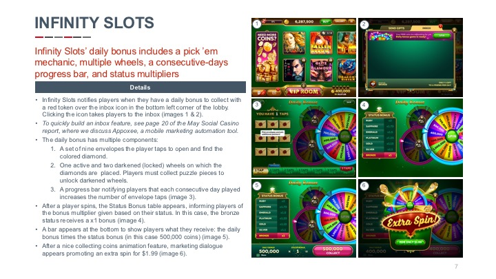
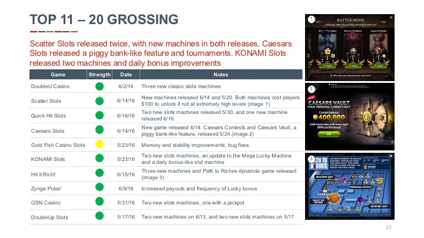
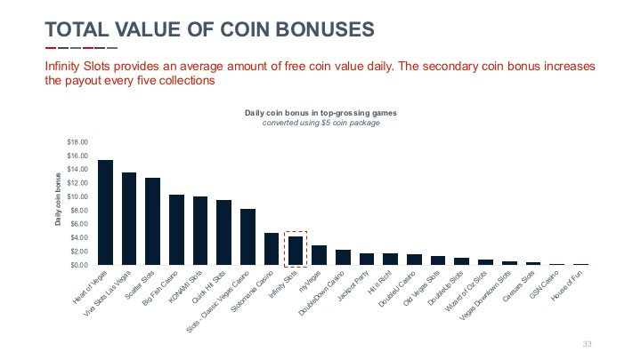

See why 9 of the 10 top-grossing social casino companies receive our monthly reports
Learn more Download exampleFeature recommmendations
Market updates
Economy deep dives
This month’s report goes deeper to include aesthetic details in addition to functional information. Our first recommendation involves the primary coin bonus, one of the most important yet least innovative features in social casino. We break down several social casino and non-casino games to analyze the full potential of this significant feature.
This month’s report goes deeper to include aesthetic details in addition to functional information. Our first recommendation involves the primary coin bonus, one of the most important yet least innovative features in social casino. We break down several social casino and non-casino games to analyze the full potential of this significant feature.
This month’s report goes deeper to include aesthetic details in addition to functional information. Our first recommendation involves the primary coin bonus, one of the most important yet least innovative features in social casino. We break down several social casino and non-casino games to analyze the full potential of this significant feature.
Feature recommmendations
Market updates
Economy deep dives
Liquid and Grit's reports are exceptionally detailed and thorough. Their techniques for analyzing market leaders and identifying emerging trends is unparalleled. The reports make strong recommendations that are backed up by ample data. I was able to treat them like an extended product management team. Many of their recommendations went right into our product roadmap.